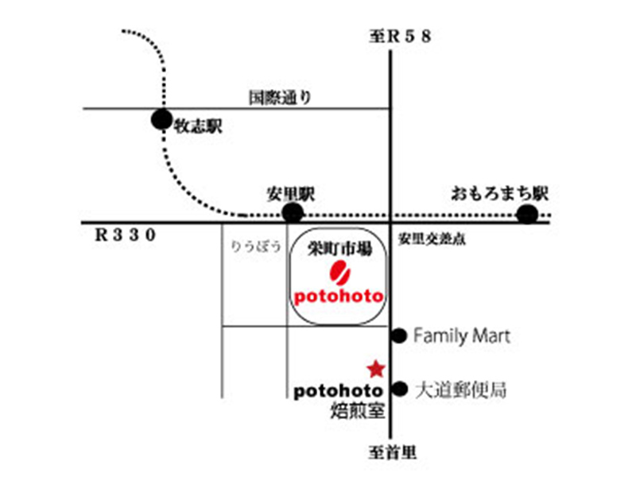

ABOUT
このショップについて

COFFEE potohoto は 2006 年 12 月、那覇市栄町市場に 2.5 坪のコーヒー豆屋としてオープンしました。その後、お店から徒歩 3 - 4 分の場所に焙煎室を設け、焙煎室では毎日、焙煎人 * 山田哲史により焙煎、新鮮な豆を市場内店舗とネット店にて豆販売しています。また店頭では常時 7 種類ほど並ぶ珈琲やその他アレンジドリンクをお楽しみいただけます。素材の味わいを最大限に生かし、珈琲豆の持つ甘さと飲み心地の良さを意識した焙煎を心がけております。
『常に感動を追い求め、素材選び、焙煎、抽出をしていく。
「その感動をお客様と共有したい」
これが一番の原動力であり、やり続けていきたいこと。
また珈琲に国境はなく世界中の人々と私たちを繋いでくれる、
これが最高の魅力である。』
「その感動をお客様と共有したい」
これが一番の原動力であり、やり続けていきたいこと。
また珈琲に国境はなく世界中の人々と私たちを繋いでくれる、
これが最高の魅力である。』
COFFEE potohoto
〒902-0067 沖縄県那覇市安里 388-1（栄町市場内）098-886-3095
coffee@potohoto.jp
月 - 土 10:00 - 18:00
定休日＊日曜日
*ドリンク・豆の販売は栄町市場店頭で行なっております
（焙煎室は通常営業は行なっておりません）
お車でお越しのお客様は市場周辺コインパーキングをご利用ください
モノレール安里駅からは徒歩 3
分です